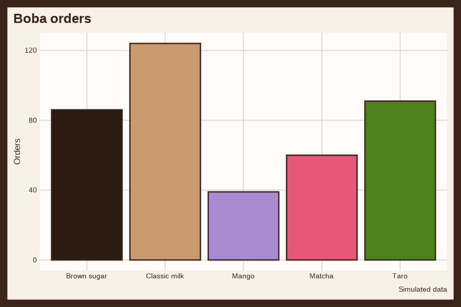
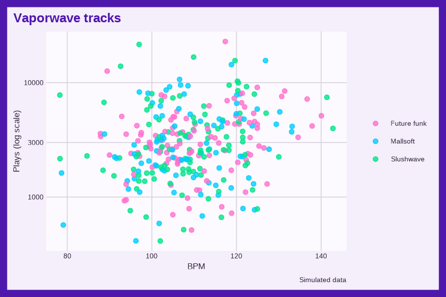

fmggp2 is the support package for ggplot2: field manual. It holds the Gen Z ggplot2 themes and the small helpers the book uses, so every chapter loads the same tested code.
Installation
Install the development version from GitHub:
# install.packages("pak")
pak::pak("mjfrigaard/fmggp2")Themes
Each theme is named after an aesthetic, trend, or object from Gen Z internet culture, and its palette follows how that topic looks to Gen Z online (its colors, objects, and materials). The book chapters still use the earlier 90s themes until they are updated.
The two graphs below use theme_boba() and theme_vaporwave() with simulated data.
library(fmggp2)
library(ggplot2)
showtext::showtext_auto()
set.seed(1980)
boba <- data.frame(flavor = sample(c("Classic milk", "Taro", "Brown sugar", "Matcha", "Mango"), 400, replace = TRUE,
prob = c(0.3, 0.2, 0.25, 0.15, 0.1)))
ggplot(boba, aes(x = flavor, fill = flavor)) +
geom_bar(show.legend = FALSE) +
labs(title = "Boba orders", caption = "Simulated data", x = NULL, y = "Orders") +
theme_boba(base_size = 13)
set.seed(1984)
tracks <- data.frame(bpm = rnorm(300, 110, 12))
tracks$plays <- round(rlnorm(300, meanlog = 8 + 0.01 * (tracks$bpm - 110), sdlog = 0.7))
tracks$mood <- sample(c("Mallsoft", "Future funk", "Slushwave"), 300, replace = TRUE)
ggplot(tracks, aes(x = bpm, y = plays, colour = mood)) +
geom_point(alpha = 0.8) +
scale_y_log10() +
labs(title = "Vaporwave tracks", caption = "Simulated data", x = "BPM", y = "Plays (log scale)", colour = NULL) +
theme_vaporwave(base_size = 13)
Reference images
Each theme links its Wikipedia article. A freely licensed image (public domain, CC0, CC BY, CC BY-SA, or GFDL) from the article, or from Wikimedia Commons when the article has no free image, illustrates it. The themes vignette shows each image with its author and license.
Book helpers
| Function | What it does |
|---|---|
co_box() |
Prints a Quarto callout box (use with results: asis) |
status() |
Prints a chapter status callout |
%nin% |
The negation of %in%
|
How the chapters teach distributions
Each chapter simulates its data from a known distribution, then connects that distribution to the graph in a “Distribution” section. The section follows the concrete, pictorial, abstract sequence from Singapore math:
- Count it (concrete): print a handful of simulated values and a small count table.
- Draw it (pictorial): draw a bar model (parts of a whole), then the graph with reference lines.
- Name it (abstract): state the generating distribution (e.g., ) and show how each parameter maps to the graph.